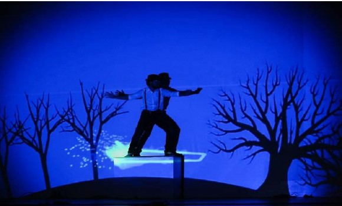

Projection Mapping
Envisage, Shaastra 2018

This project was a part of the Envisage show, which is the only student-orchestrated techno-entertainment pro show, which is a part of Shaastra, the annual Technical Fest of IIT Madras.
Various 2D animations were designed using Adobe After Effects, Cinema 4D and Blender, which were then spatially mapped on to 3D objects using surface maps, thus creating an augmented reality. A virtual environment was created in tune with audio and human interaction to give illusions of depth and motion. An IR Sensor based feedback control system was implemented for the positioning accuracy of the projection. A part of the recorded show can be seen here.
A total footfall of 5k+ audience was observed for the show.
